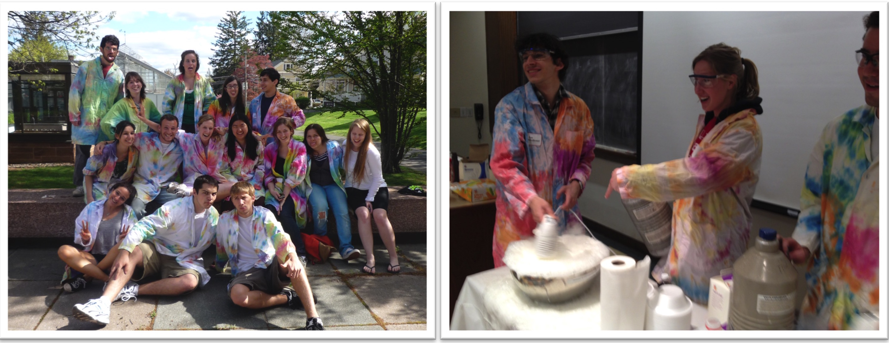
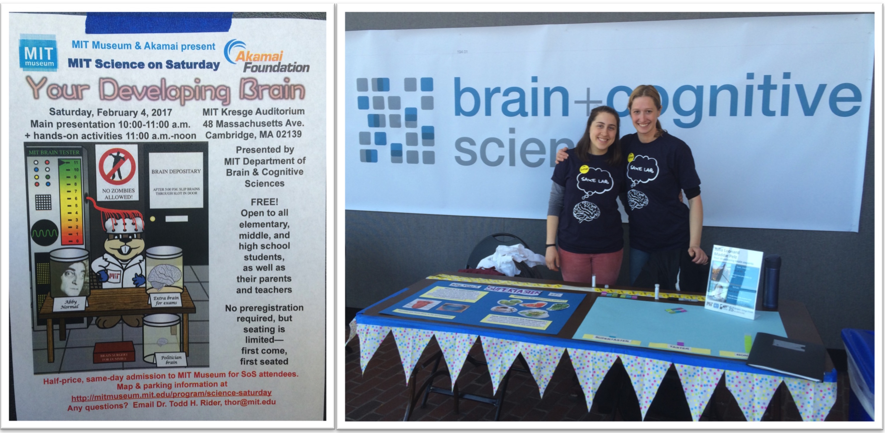
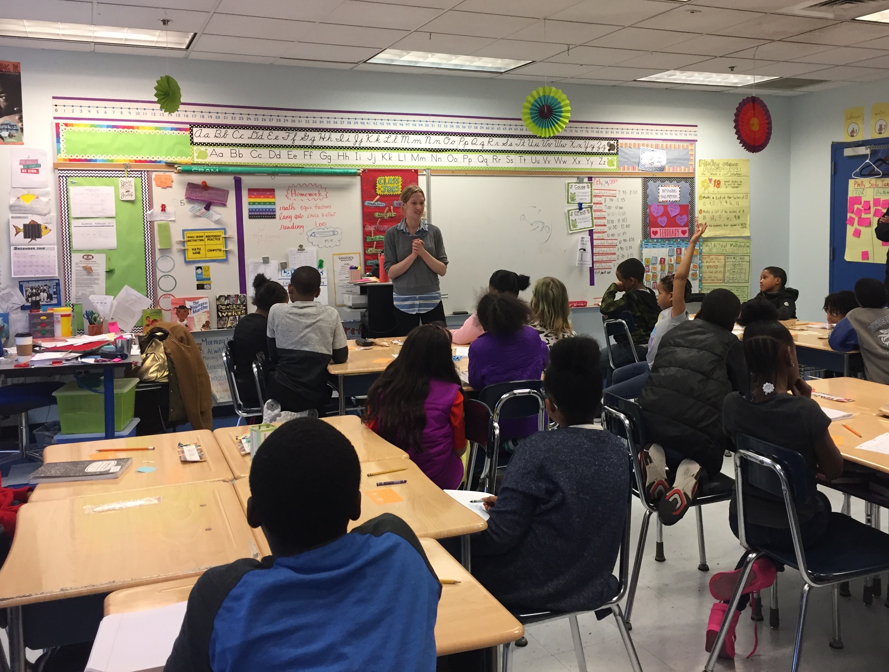
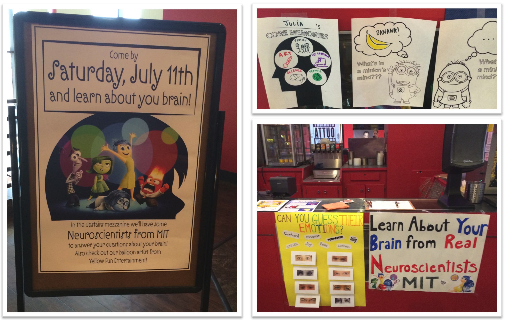
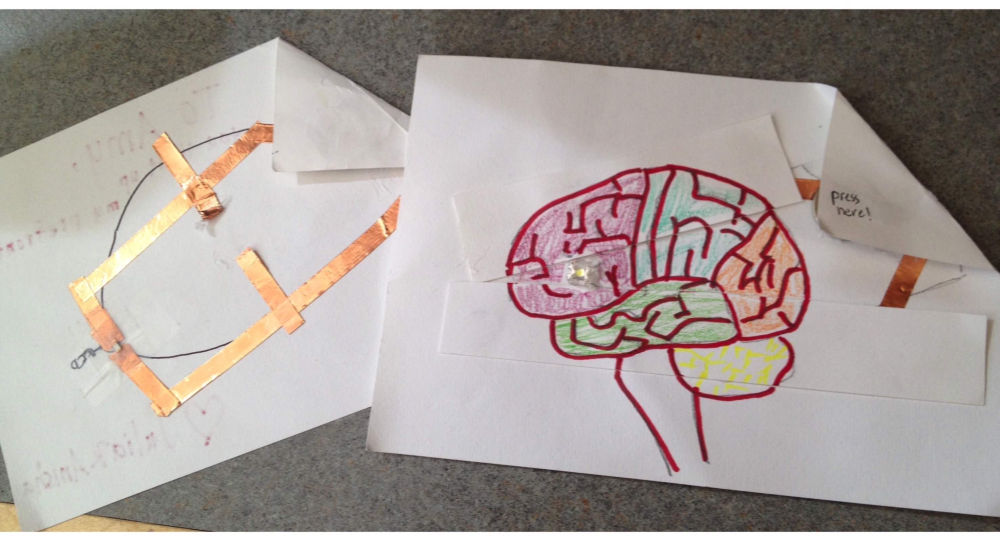

My research interests in learning and resilience compliment my personal passion for communicating and sharing scientific knowledge with the broader pubic. I love teaching children about science, especially neuroscience and psychology related to how they think and learn. Listed below are a few of the outreach efforts I have been involved with over the years.

During my freshman year at Wesleyan, I co-founded Wesleyan Science Outreach (WSO), an after-school science club that works with local public elementary school students in low-income communities near Middletown, Connecticut. Our goal was to design a curriculum that reinforced the key scientific concepts that children were taught in school, but was also geared towards children’s own interests. Beyond designing innovative lesson plans, our main objective was to show children that science was fun and foster a passion for science in populations underrepresented in the field. As interest in our program grew in the larger community, we wrote a grant to turn the club into a service-learning course at Wesleyan University and expand the program to five public elementary schools. The grant was funded and the club grew to include 40 Wesleyan student volunteers and served over 90 elementary school children. My junior and senior year of college, I co-taught the WSO service-learning course with two chemistry professors and learned how to teach my college-aged peers science pedagogy so that the club would continue to thrive once I left Wesleyan. The club still exists today and you can check it out here!
During my time at MIT, I have been involved in various outreach Projects.

I have volunteered at the MIT museum’s Science on Saturday event, teaching children about basic sensory systems.

I have taught in elementary and middle school classrooms about brain development and plasticity and lead educational seminars for parents about how adults can support positive child development.

With colleagues in the Gabrieli lab, I helped run outreach events at screenings of Pixar’s Inside Out.

Finally, when children come and participate in experiments at MIT, I enjoy teaching them about their brains in innovative ways. For one study, every child went home with a self-made “light up brain circuit” to reflect how their prefrontal cortex “lit up” when they did a working memory task in the scanner.
Above all, I believe in making Science fun and approachable for children!